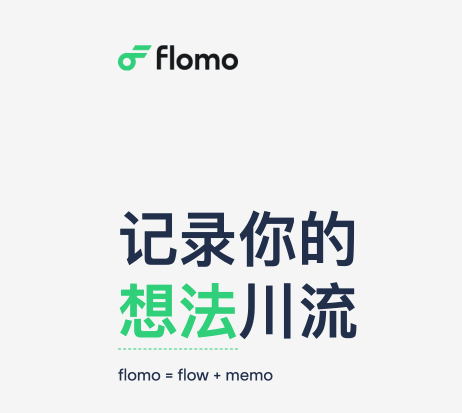

为什么使用Flomo

Flomo的设计理念
Niklas Luhmann & Zettelkasten
 在德国社会学家尼克拉斯 · 卢曼看来，
知识的最小单位是一张小小的卡片。
卢曼的卡片包括
在德国社会学家尼克拉斯 · 卢曼看来，
知识的最小单位是一张小小的卡片。
卢曼的卡片包括
Dieter Rams & MUJI
“好的设计是谨慎克制的”
好的设计应该是中性和克制的，为用户的自我表达留下空间
少楠表示：
输入框是最好的收藏夹，要让用户自己填充意义
Flomo不去扭曲用户欲望，尊重用户，只做一个安静的容器
“好的设计是尽可能不设计”
Less, but better.
MUJI的设计师深泽直人深受Rams影响，而MUJI也不张扬，不强调个性，可以跟用户相处更久
「这样就好」
我为什么选择使用Flomo
大脑的咀嚼，而非只作文字搬运工
收藏 = 丢进收藏夹里吃灰
你上一次打开收藏夹是什么时候？ 反正我没打开过了
印象笔记用来保存不会看第二遍的文章；OneNote用来复制粘贴不会打开第二遍的文章
但用Flomo写下的都是大脑咀嚼过的
捕捉闪现的灵光，而非let it go
每天大脑里的各种想法川流不息地奔涌着：「啊！这个好有趣」「啊！这个有点烦」「啊！要分享一下这个」
但是，发朋友圈？——又要分组；发微博？——总有莫名其妙的浏览人；写备忘录？——下次就找不到了
怪不得少楠称Flomo为「写给自己看的微博」
温故而知新，可以为师矣
你小时候有没有摘抄本？ 我有好几本， 就放在手边
不管上课下课，看到了或想起来了就拿起来翻翻；很多句子或知识就这样记下来了
 现在没有手写本，数字笔记也可以时常回顾了
现在没有手写本，数字笔记也可以时常回顾了